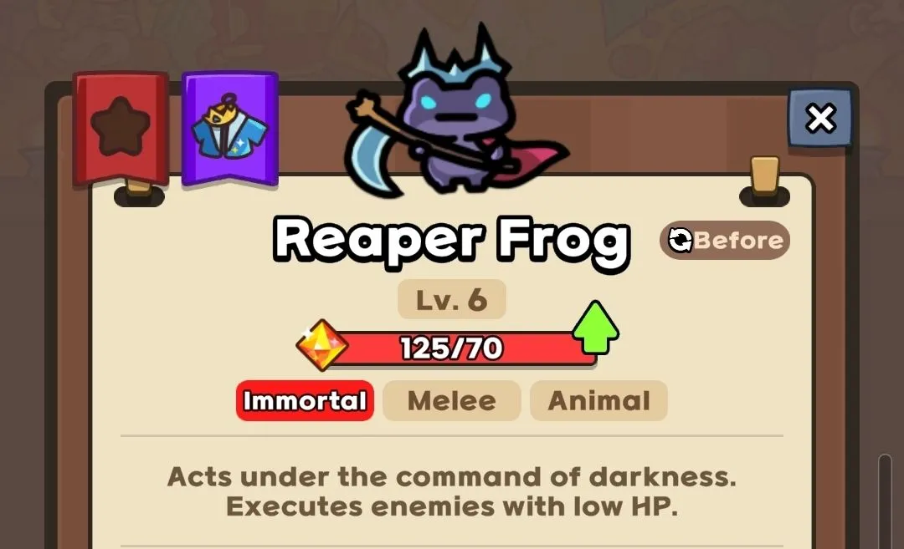
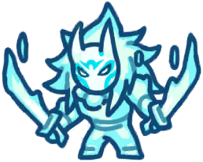

How to unlock Immortal Guardians
An Immortal Guardian unlocks when you get their mythic form to level 15. Once the mythic form is level 15, you can pay 6000 gems to unlock the immortal form. The actual "Immortal" tab to view Immortal Guardians unlocks once you get any mythic to level 12.
After being unlocked, each immortal guardian has their own summon requirements in-game. NOTE: Only one copy of an Immortal can be summoned at a time. For Immortals with two forms like Reaper Frog, only one of those forms can be summoned at a time.
Leveling Up
Each immortal guardian has a different level separate from the level of their mythic form, and it starts at level 1. Note that they're typically still very strong at level 1, but the upgrades are notable increases in strength. Level 1 to level 6 is fairly easy to get, and is worth going for right after unlocking an Immortal. To level them up you need Immortal Stones instead of Mythic Stones. As of now, the only way to get Immortal Stones is through:
- God Mode
- Guild Shop
- Pvp shop
- The Normal Shop for gems
- Events
You can see the cost to level up immortals here
Immortals and Treasures
None of the Immortals are directly affected by Mythic Treasures. It's worth noting that the first 3 all do benefit from them on the way to summon them. The Mythic Frog's treasure gives some material back if a curse lift is failed. This means that it's easier to try again after each failed curse lift. Mama's treasure lets her summon imps more quickly. Hailey's treasure allows her to gather Star Power more quickly. All of these effects speed up their ability to turn into their immortal form, but once in the form they don't hold these treasures or benefit from any of the effects.
Immortals vs Night Shaman
In Hell and God Mode, there's a boss called Night Shaman that can change your Guardians into other Guardians. One of the best traits of Immortal Guardians is that they cannot be changed into another Guardian. This makes them even better than they would already be just being higher tier characters with more damage, because it gives your board some resilience.
The List of Immortal Guardians
Below is a list of all the different Immortal Guardians. It'll explain how to actually summon them, since they have unique summon methods, it'll discuss their role/playstyle, and have a video of them being used.
Reaper Frog/Dian


Playstyle
Frog Form
Reaper Frog is a Physical Damage DPS Guardian. He's easy to summon, and he does good damage. He has two forms: Frog Form, and Dian Form. Unlike the Mythic Frog Form, Immortal Reaper Frog is a very solid DPS unit. He has damage comparative to Lazy Taoist or Overclocked Rocket Chu. He's also much cheaper to summon than Rocket Chu, which is very good since they both have a chance to die when being summoned, meaning the risk is lower when summoning Reaper Frog, although Rocket Chu does have a higher success rate at 50% versus Frogs 35%.
Reaper Frog's summon cost is low enough that at Luck Stone level 6+, he can somewhat consistently be summoned before wave 20 on Hell Mode. Since all you have to do is get a King Dian, you'll get a Reaper Frog on average within 3 tries. He can easily carry until wave 40, usually including the wave 40 boss. This makes him a great unit to allow you to stack econ, and slowly build the rest of your board. He also applies 80 slow to enemies with his skill "Suppression", which is overall a great skill to have as it prevents stun leaks. For comparison, the Mythic Guardian Coldy applies 50 slow with her passive, and 50 slow with her skill, and Penguin Musician applies 60 with his skill. So Reaper Frog's 80 slow is one of the stronger slows in the game.
Dian Form
Reaper Dian is a Magic Damage DPS Guardian. When you get Reaper Frog, you can do the same curse lift ability the standard frog has to transform him into Reaper Dian. It has a 35% chance to succeed by default, increasing to a 50% chance to succeed at level 12. Overall, this means the odds of succeeding in both transformations is 12.25% normally, and is raised to 17.5% at level 12. Or, 1 Reaper Dian every 8 regular Frogs 1 Reaper Dian per 6 regular Frogs at level 12. Reaper Dian is a significant upgrade overall. There have been videos of high level players clearing Hell Mode with Reaper Dian as the only DPS on the board. His skills and passives all revolve around dealing massive damage.
Skills
Frog Form
Reaper's Ascension - Passive
Has a 35% chance to ascend and become a divine being. Vanishes when ascension fails. (50% chance at level 12)
Suppression - Skill
Has a 8% chance to deal 12000% Physical DMG to enemies in their range and reduce their movement speed by 80.
Execution - Skill
Has a 12% chance to deal 9000% Physical DMG to enemies in range. Instantly executes enemies if their HP is below 5%.
Dian Form
Reaper's Instinct - Passive
Instantly executes enemies with HP below 5%.
Death Lightning - Passive
Basic attacks deal 1000% area damage.
Chain Lightning - Skill
Has a 8% chance to deal 20000% Magic DMG to a target and chain the damage to nearby enemies 10 times.
Death Touch - ULT
Summons a hellish zone that lasts for 20s, dealing 600% Magic DMG every 0.1s.
How to Summon
Reaper Frog is the easiest to summon out of the first 3 Immortal Guardians. To get a him, all you need to do is turn a normal frog into a Dian. Once you get a Dian, at any point you will be able to convert it into a Reaper Frog. From there, you can try to curse lift your Reaper Frog, into his Reaper Dian Form.
To get a Reaper Dian more easily, you can keep making Dians from the normal Mythic Frog. When you have both a Dian and a Reaper Frog on the board, if you try to lift the curse on the Frog and it fails, you can immediately turn your Dian into a Reaper Frog. You can use this strategy to make multiple attempts at Reaper Dian, without having to give up having his base Frog Form if you fail.
Gameplay
Awakened Hailey

Playstyle
Awakened Hailey is a Magical Damage DPS guardian. Her immortal form continues the style of her Mythic form in having a large ATK boost. To compare the ATK boost she gets from her skills, you'd need this much gold to get the same bonus from Money Gun:
- 285k gold at Money Gun 1
- 259k gold at Money Gun 2
- 238k gold at Money Gun 3
- 219k gold at Money Gun 4
- 204k gold at Money Gun 5
- 190k gold at Money Gun 6
- 178k gold at Money Gun 7
- 168k gold at Money Gun 8
- 158k gold at Money Gun 9
- 150k gold at Money Gun 10
- 140k gold at Money Gun 11
This makes her especially good for lower sb/mg players and also particularly good for shorter game modes (PvP, guild battle, underground cave, daily dungeon) where Safe Box doesn't have time to grow gold to a significant level. Even at higher Safe Box levels, she is a really strong Wave Clear and is always worth a summon.
Skills

Power of the Sun - Passive
Power of the sun increases ATK by 2000%. Additionally, skill damage increases by 5% for each different Mythic unit on the field.
Solar Ray - Skill
Has a 10% chance to deal 18000% Magic DMG to enemies in range.
Big Bang - Skill
Has a 10% chance to inject energy into a target. After 10s, the energy explodes, dealing 10000% Magic DMG to enemies in range. If injected to the same target 3 times, it explodes immediately, and the explosion deals an additional 100%.
Flare - Ult
Creates a blazing sun for 10s, dealing 4500% Magic DMG every 0.4s and 50% to nearby enemies.
How to Summon
Awakened Hailey is summoned based on a 15% chance every time Mythic Hailey uses her Ult while having full Star Power (10). Because of this, you can signficantly speed up how quickly she can be Awakened by improving MP Regen.
Grand Mama

Playstyle
Grand Mama is a Support Guardian that deals Magic DMG. She's cheap to get on the board if you can get Mythic Mama summoned before wave 10. She's difficult to summon later in the game though. She applies a variety of buffs and debuffs through passives and skills:
- +225% or higher damage to the whole board (passive)
- Increases DMG taken by 15% (skill)
- Reduces healing by 50% (skill)
- Revives a random Mythic unit every 5 Mythic deaths (ULT)
NOTE: The revival skill counts failed Frog Curse Lifts, failed Chu Overclocks, and even Tar Cannibalisms. At level 12, this skill triggers on every 3 deaths instead of 5.
In Hell Mode, she can go to wave 40, but she will struggle to clear the wave 40 boss. Her damage is comparable to Lazy Taoist/Overclocked Rocket Chu.
Grand Mama shines particularly well in PvP. In PvP, players don't typically get enough gold to get large damage bonuses from Money Gun. With Grand Mama level 6, you can get a minimum of +225% damage from her passive bonus.
Skills
Assimilation - Passive
When Grand Mama is summoned, increases the ATK of all allies by 10% for each Imp that was merged.
Necromancy - Skill
Has a 9% chance to deal 6000% Magic DMG to enemies in range. If Necromancy kills an enemy, deals an additional 5000% Magic DMG to nearby enemies.
Mark of the Dead - Skill
Has a 10% chance to inflict enemies in range with a debuff that deals 1000% Magic DMG every 0.4s for 4s, increases damage taken by 15% for 4s, and reduces healing received by 50%.
Assimilation Details
Assimilation is an interesting skill. On paper, it sounds extremely powerful. In the right circumstances (pvp) it is. But in coop, it won't go as far as you think. This is because the damage bonus for Assimilation only applies to a characters base damage. This is different than Money Gun, because Money Gun stacks with other types of damage, like Mythic Damage Upgrade.
The short version is basically, after you reach 100k+ damage, less than 5% of your damage is going to be coming from Grand Mama's damage buff. However, in PvP players won't be getting that much gold anyways. This means that a +225% buff is going to be much more impactful. Since it's not dwarfed by the typical Money Gun damage buff.
How to Summon
To summon a Grand Mama, you need to have at least 9 imps summoned by Mythic Mama. When you get 9 imps or more, the button to summon Grand Mama will show on screen. When pressed, she'll be summoned and absorb all the imps. Each imp will give a +10% ATK buff, unless she's level 6, where she'll instead give a +25% ATK buff.
This is a harder to accomplish in hell mode. The increased health of Hell Mode enemies makes it so that Mama's ult stops killing enemies much earlier. If you don't get a Mama before wave 10, you're likely going to have a hard time getting 9 imps. Even if you do, it's still going to take luck to get them. For this reason, Grand Mama is only really viable if you have Mama's exclusive treasure.
Gameplay
Primeval Bomba


Playstyle
Primeval Bomba is a Physical Damage DPS guardian. There isn't a large direct commitment to getting Primeval Bomba, as you only need Bomba on the board to be able to get Primeval Bomba. Attack speed buffs help get Primeval Bomba more consistently, which is good because it's a buff you want to build up anyway.
His Primeval Form has two main differences, the basic attack, and the ultimate. The basic attack does not have a workout effect to strengthen it, instead, it just does 500% area damage at base, meaning Primeval Bomba does not need to build up stacks for full power.
The other main difference is the ultimate changes to cooldown-based instead of MP-based so MP Regen effects stop working on it. Primeval Bomba's ult also ignores some defense, which can be important in the late game. If you're around 40 below the desired DR, Primeval Bomba will still do major bonus damage in ultimate form.
His main role is being a top tier Wave Clear unit. Because his wave clear is so strong, this frees you up to summon units who are really bad at wave clear such as Watt or Vayne, without worrying about if you can survive the waves. You'll have good all around coverage for the entire game if you take advantage of this, so always make sure to pair him with a good boss killer!
Lance works as well, but keep in mind he takes a melee space. Multiple Lances will end up fighting for space with Bomba, so realistically you'll only want 1 Lance next to your Bomba so they can attack at the same time.
Skills

Shockwave - Passive
Basic attacks deal 500% area damage.
Slam - Skill
Has a 10% chance to deal 4000% Physical DMG to enemies in range every 0.5s for 2.5s.
Uppercut - Skill
Every 10 attacks, deals 8000% Physical DMG to enemies in range and increases basic attack damage by 100% for the next 5 hits.
Power Unleashed - ULT, cooldown (unlock at level 6)
For 10s (20s at level 12), increases ATK by 100%, ATK SPD by 30% and ignores 25% of the target's DEF.
How to Summon
Primeval Bomba is summoned by Bomba having max workout stacks, and then every basic attack has a 0.1% chance for Primeval Bomba to be able to be summoned. Workout stacks are given by chance every basic attack Bomba does, this means summoning Primeval Bomba is ALL about basic attacks, so to speed up Primeval Bomba's activation, you will want a lot of attack speed.
A note for attack speeds, all attack speed buffs become more effective the more UNIQUE sources of attack speed there are. This means 2 eagles and 2 frogs is better than 6 eagles for example, even though they both only technically give 30% attack speed. So for maximum effectiveness, you will want many different sources of attack speed to speed up the Primeval Bomba process.
Gameplay
Ghost Ninja
Playstyle
Ghost Ninja is a Physical Damage DPS guardian.
His base ATK is the lowest of the DPS Immortals. His passive is Critical Hit-based so there’s no control over it. His Execution and Throw skills have multipliers that are only slightly better than Rocket Chu. His ult Guillotine sounds like it is a boss killer move with its 50000% Physical DMG on one target but Awakened Hailey’s ult actually deals 112500% damage over its entire duration and has splash.
In conclusion, Ghost Ninja is rather unremarkable.
Skills

Opportunity - Passive
When a skill lands a Critical Hit, Ultimate cooldown is reduced by 2s.
Throw - Skill
After 10 attacks, deals 5000% Physical DMG to enemies in range 4 times..
Execution - Skill
10% chance to deal 4000% Physical DMG to enemies in range, with an additional 50% chance to activate the skill again. If this skill kills an enemy, the reactivation chance increases by 25%.
Guillotine - Ult, Cooldown
Deals 50000% Physical DMG to a single target, or deals 35000% Physical DMG to all enemies in range with a 50% chance. CRT DMG is increased by 100%.
How to Summon
Sacrifice one Ninja with an 11-combo from Assassinate and 4 additional Ninjas. Combos are counted based on how many times Assassinate reactivates (55% reactivation chance). Ninja’s exclusive treasure Sharp Shuriken further increases the reactivation chance of Assassinate by up to 15%.
On paper, it seems like Shadow Ninja is really easy to summon. You have to summon 5 Ninjas anyway to sacrifice for the immortal form. The cost of 5 Ninjas isn’t super expensive (5 epics, 10 rares). But in practice, the issue is having enemies exist which can survive a 10-combo such that your Ninjas can complete an 11-combo. As such you have to juggle a fine balance between too many Ninjas killing enemies too fast, your teammate killing enemies too fast, and losing the game due to not dealing enough damage.
In Hard and God mode, you have the dungeon with bosses where your Ninjas can attempt their 11-combos non-stop but this will compete for spots with Bandits for gold farming.
Additionally 5 Ninjas out of 18 spots on the board is a lot of space taken up. Ninja is also a Physical DPS and hence needs Defense Reduction on top of the usual stun setup. This means that attempting to summon Shadow Ninja only makes more sense in Hard and God with the Dungeon to have a better chance to get the 11-combo in time and more space to fit all the 5 Ninjas and Defense Reduction.